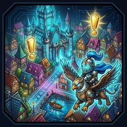
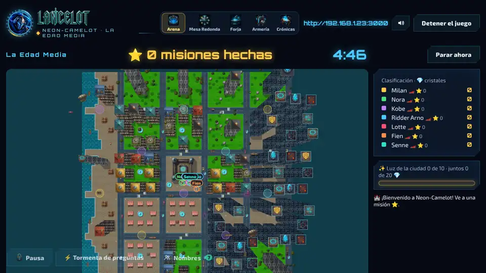
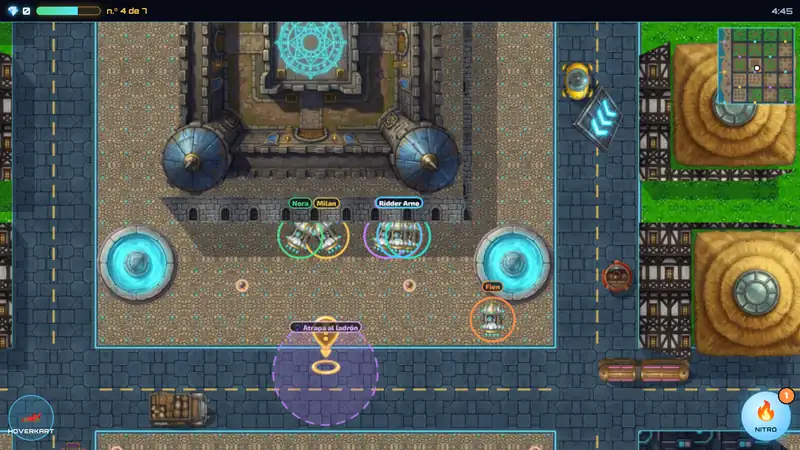
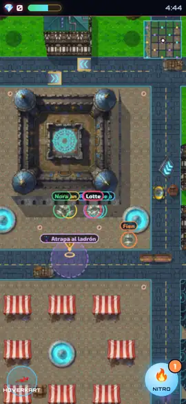

Carreras y aventura
Neon-Camelot
Una gran ciudad de caballeros abierta: toda la clase corre a la vez en hoverkarts que derrapan y saltan. Perseguir ladrones, carreras, apagar incendios. Cada misión empieza con una pregunta.
- Cómo se juegaCada uno por su cuenta
- Respuesta correctaEmpieza la misión: persecución, carrera o incendio
- ContenidoCon cualquier cuestionario de la Forja: tuyo o creado con IA.
- Los alumnos juegan enChromebook, portátil, tableta o móvil, en el navegador
Así se ve


